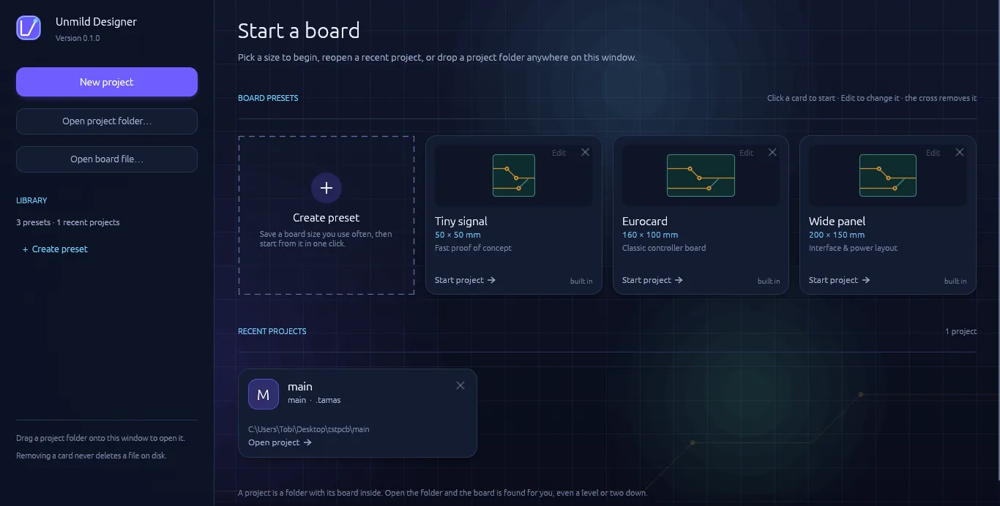
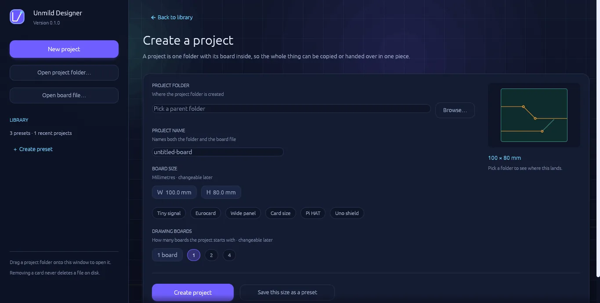
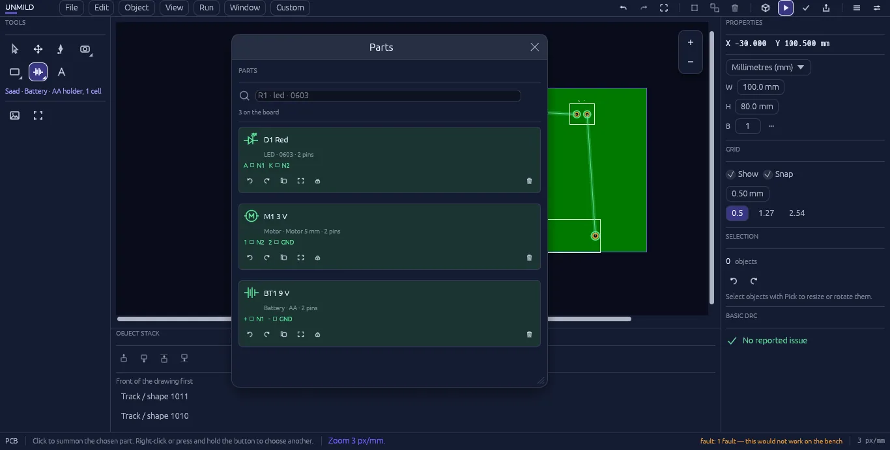
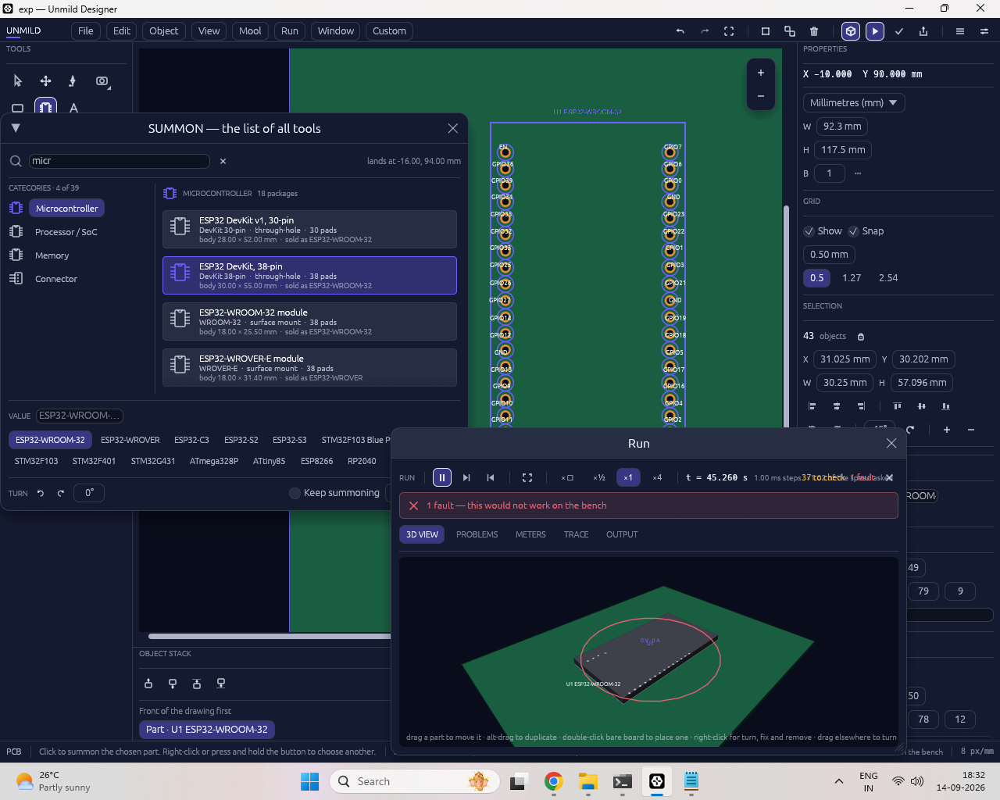

Designs that stay organized
Projects carry their boards, presets, reference material, and release output together so a design remains understandable long after the first layout session.
Unmild Designer is a professional PCB design environment for engineers who expect a board tool to do more than draw. Layout, physical review, design checks, and manufacturing release stay inside one disciplined project workflow.

Professional hardware work needs clarity at every stage: what the board is, how it behaves, what has been checked, and exactly what leaves the project for fabrication.
Projects carry their boards, presets, reference material, and release output together so a design remains understandable long after the first layout session.
Direct manipulation, live coordinates, grid-led placement, layers, properties, and focused tools keep physical geometry under your control.
Live 3D and Run keep the board visible as an object, helping teams review component state, pin activity, readings, and reported issues in context.
Design checks and a complete, organized manufacturing package keep the final handoff as deliberate as the layout that produced it.
Unmild Designer gives the physical board a dedicated workspace—not a generic drawing surface. Place components, define the board, route copper, work through layers, and refine every object with the precision expected from professional engineering software.
Serious design starts with a system. Unmild Designer gives each job a clear home before the first part is placed, so geometry, decisions, references, and release data have a stable place to live.

Create a project with a destination folder, project name, board dimensions, units, and board count. The project keeps its board data in a .tamas file; when the design is released, the manufacturing package is organized inside its build folder. The result is a workflow that stays coherent from first concept to final output.
Start from controlled board dimensions, units, and a defined number of boards instead of rebuilding the same foundation every time.
Open a complete project folder or go directly to an existing .tamas board file when the work is already underway.
Save repeatable setups as presets, revisit recent work quickly, and keep common formats ready for the next hardware program.
Manage one board or a larger family of boards in the same project environment, with room for up to 1,000 boards.
Good layout begins before the canvas opens. The project creator puts the practical decisions in one deliberate step: a folder, a name, physical width and height, the preferred unit system, and the number of boards to create. Saved presets turn a proven setup into a repeatable starting point for the next program.

A professional editor should not make engineers hunt for basic control. The tool rail puts selection, movement, connectivity, board construction, component placement, drawing, and object refinement within immediate reach.
Pick objects for direct editing, then move across the board with the hand tool, mouse wheel, or the Shift-click shortcut. Keep attention on the exact region where the decision is being made.
Setu—Sanskrit for connection—draws the board’s wire paths. Use direct routing, constrained linear movement, or controlled curves to define connections with the right geometry.
Add pads, vias, traces, holes, mounting holes, solder-mask openings, slots, keepouts, copper zones, footprints, board edges, and nets—the fundamental language of a physical PCB.
Saad—Sanskrit for a call or invitation—opens the component library for placing resistors, LEDs, batteries, and the parts that give the board a complete electrical identity.
Create rectangles, ellipses, and polygons; hold Control for constrained proportions. Add clear text wherever the board requires labeling, notation, or documentation.
Review and adjust dimensions, position, units, widths, heights, layers, and selected-object details without stepping away from the work.
The workspace brings a menu bar, tool panel, property panel, layer controls, and Run controls around the board canvas. It keeps the commands of a serious hardware environment available, while giving the design itself the visual priority.


Saad is the searchable component picker inside Unmild Designer. Search by part, value, or package; choose what belongs on the board; and place it directly where the layout needs it. The library is made for keeping selection quick when the design is moving.
Unmild Designer separates the work into focused areas while keeping the project connected. Each decision has a place, whether it begins as board geometry, electrical intent, a behavior check, or a manufacturing deliverable.
Place, select, move, duplicate, rotate, route, work through layers, and build the board outline with direct manipulation and undo/redo.
Create session components and named nets, then use electrical-rule checks to catch missing components, missing nets, and duplicate net names.
Bring DC sweep, AC / Bode, and transient workflows into the project to inspect electrical behavior where it informs the next design choice.
Estimate single-ended microstrip and edge-coupled differential impedance from editable stackup assumptions while the layout remains easy to refine.
Bring PCB checks, electrical checks, 3D review, and Run behavior into one verification stage instead of treating them as an afterthought.
Generate manufacturing, review, documentation, and release information together so the final package leaves the project as one organized deliverable.
Live 3D and Mool take the work past a flat board view: see the physical system, investigate its behavior, and keep code close to the hardware it controls.
Live 3D turns the PCB into a physical review environment. Run keeps component state, pin activity, readings, and detected issues beside the design while you work—so a design review can focus on the system that will exist in the real world, not only a collection of 2D objects.

Mool is the embedded-development environment inside Unmild Designer. It connects the selected microcontroller, its board context, C/C++ source code, local toolchain, target binary, and Live 3D behavior in a single flow. Firmware gains a home beside the controller, its pins, and the physical PCB it is meant to drive.
Select the microcontroller placed on the board so the firmware begins in the context of real hardware.
Author embedded firmware directly inside the project, beside the board and its pins.
Use the installed local compiler to build the program and prepare the target binary image.
Program the target, then see pin state, behavior, readings, and issues in the context of the board.
What Mool needs: a supported microcontroller selected in the project and the matching compiler or toolchain installed on the Windows machine. Mool uses that local toolchain to compile C/C++ and produce the required target format.

A professional result is not just a completed layout; it is a reviewable, manufacturable handoff. Unmild Designer brings board review, engineering checks, manufacturing data, and release documentation into the controlled final stage of the project.

Professional speed comes from confidence. Unmild Designer gives you control over how the workspace looks, moves, and responds, so the interface adapts to your process rather than interrupting it.
A capable hardware environment should be clear about the work it supports and the deliverables it creates.
Unmild Designer is a Windows desktop hardware-design environment from UNMILD. It brings PCB design, live physical review, circuit workbenches, verification, and manufacturing release into one project workflow.
A project is built around its .tamas board file. Projects can hold board settings, presets, visual references, and a dedicated build folder for exported manufacturing output, making the work easier to carry, archive, or hand off as one unit.
Export PCB package produces Gerber artwork for copper, silkscreen, mask, paste, and profile layers; drill and NC data; review documentation; a release manifest and README; plus BOM, pick-and-place, stackup, and fabrication information.
Live 3D lets you inspect the PCB and supported component bodies as a physical system. Run keeps component state, pin activity, readings, and reported issues beside that board view, helping feedback stay connected to the layout.
Unmild Designer is available through the Microsoft Store. Use the Get Unmild Designer button to open the product listing.